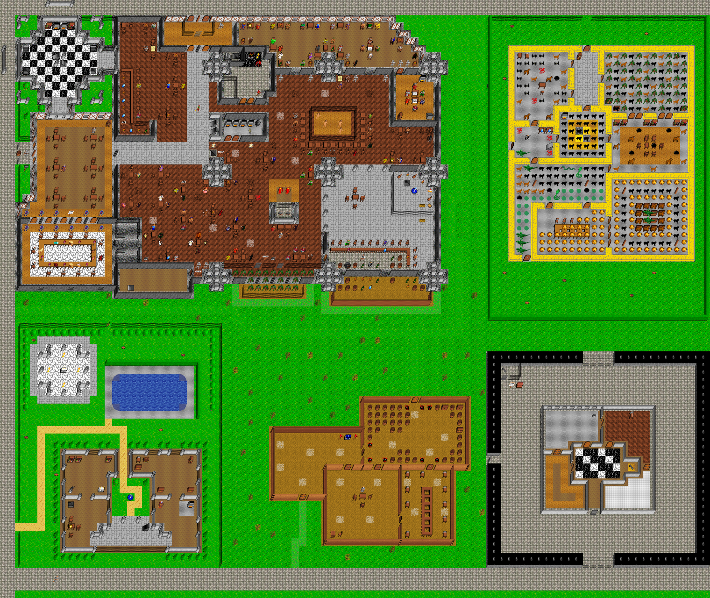

Map Western Navar Tavern, Mainfloor, in region The Kingdom of Navar. Map level: 20.
Map view:

(click for larger view)
Exits from this map:
Exits leading to this map:
Monsters on map (level from 1 to 30): acid sphere, angry dwarf, Arab, barbarian, bartender, beggar, beholder, bird, blob, bombmaker, castle guard, child, cleaning woman, cleric, conjurer, cooking slave, courier, cunning gnome, Dancing girl, dark elf, demon priest of Gorokh, dog, doorman, dragon hatchling, drunk viking, dwarf, dwarf priest, dwarf wizard, electric dragon dwarf, elf, fighter, fireborn, freemason, freemason wizard, ghast, giant bat, giant cobra, goblin, greater dwarven guard, grimreaper, guildmaster, Hick, high roller wizard, human, large man, large woman, lesser dwarven guard, madman, mage, man, mastif, Merchant, murder, murdering thief, neko chan, ninja, northman, old man, orc, panther, pirate lass, Richie, Royal Guard, sage, sailor, sandy, serpent, shadowtiger pup, slave, small troll, strong woman, strongman, swashbuckler, tax collector, thief, thugg, Townsfolk, Townsman, unlucky gambler, viking, warrior, wealthy old man, wizard, woman, wyvern.
The Kingdom of Navar's map index | Region index | Global map index | World map
{kind=link}